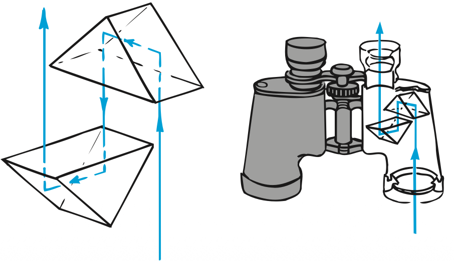
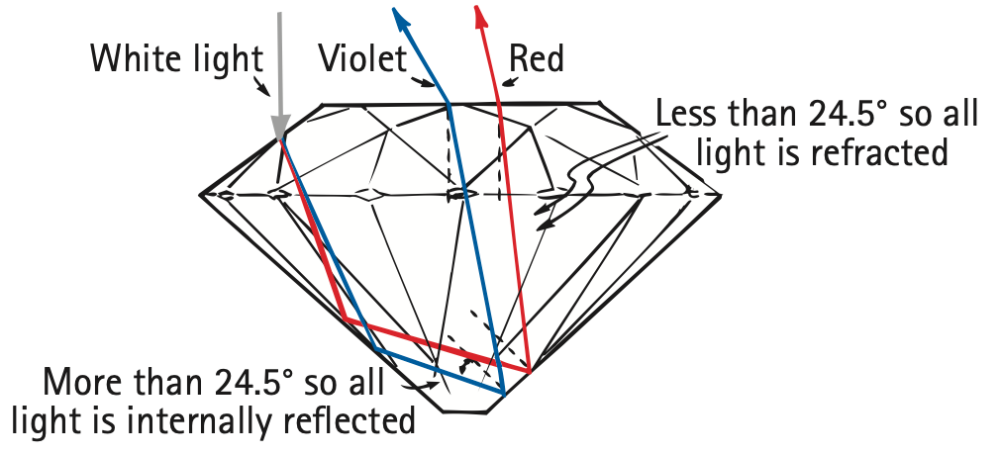

Total Internal Reflection
Some Saturday night when you’re taking your bath, fill the tub extra deep and bring a waterproof flashlight into the tub with you. Switch off the bathroom light. Shine the submerged light straight up and then slowly tip it away from the surface. Note how the intensity of the emerging beam diminishes and how more light is reflected from the surface of the water to the bottom of the tub. At a certain angle, called the critical angle, you’ll notice that the beam no longer emerges into the air above the surface. The intensity of the emerging beam reduces to zero where it tends to graze the surface. The critical angle is the minimum angle of incidence inside a medium at which a light ray is totally reflected. When the flashlight is tipped beyond the critical angle (48° from the normal for water), you’ll notice that all the light is reflected back into the tub. This is total internal reflection. The light striking the air–water surface obeys the law of reflection: The angle of incidence is equal to the angle of reflection. The only light emerging from the surface of the water is the light that is diffusely reflected from the bottom of the bathtub. This procedure is shown in Figure 28.37. The proportions of light refracted and light internally reflected are indicated by the relative lengths of the arrows.

Total internal reflection occurs in materials in which the speed of light is less than the speed of light outside. The speed of light is less in water than in air, so all light rays in water that reach the surface at more than an incident angle of 48° are reflected back into the water. So your pet goldfish in its aquarium looks up to see a reflected view of the sides and bottom of the aquarium. Directly above, it sees a compressed view of the outside world (Figure 28.38). The outside 180° view from horizon to opposite horizon is seen through an angle of 96°—twice the critical angle. A lens that similarly compresses a wide view, called a fisheye lens, is used for special-effect photography.

Total internal reflection occurs in glass surrounded by air because the speed of light in glass is lower than in air. The critical angle for glass is about 43° depending on the type of glass. So light in the glass that is incident at angles larger than 43° to the surface is totally internally reflected. No light escapes beyond this angle; instead, all of it is reflected back into the glass, even if the outside surface is marred by dirt or dust—hence the usefulness of glass prisms (Figure 28.39). A little light is lost by reflection before it enters the prism, but once the light is inside, reflection from the 45° slanted face is total—100%. In contrast, silvered or aluminized mirrors reflect only about 90% of incident light. This is the reason for the use of prisms instead of mirrors in many optical instruments.

A pair of prisms, each reflecting light through 180°, is shown in Figure 28.40. Binoculars use pairs of prisms to lengthen the light path between lenses and thus eliminate the need for long barrels. So a compact set of binoculars is as effective as a longer telescope. Another advantage of prisms is that whereas the image in a straight telescope is upside down, reflection by the prisms in binoculars reinverts the image, so things are seen right-side up.

The critical angle for a diamond is about 24.5°, smaller than for any other common substance. The critical angle varies slightly for different colors because the speed of light varies slightly for different colors. Once light enters a diamond gemstone, most is incident on the sloped backsides at angles larger than 24.5° and is totally internally reflected (Figure 28.41). Because of the great slowdown in speed as light enters a diamond, refraction is pronounced, and because of the frequency-dependence of the speed, there is great dispersion. Further dispersion occurs as the light exits through the many facets at its face. Hence we see unexpected flashes of a wide array of colors. Interestingly, when these flashes are narrow enough to be seen by only one eye at a time, the diamond “sparkles.”

Total internal reflection also underlies the operation of optical fibers, or light pipes (Figure 28.42). An optical fiber “pipes” light from one place to another by a series of total internal reflections, much as a bullet ricochets down a steel pipe. Light rays bounce along the inner walls, following the twists and turns of the fiber. Bundles of optical fibers are used to see what is going on in inaccessible places, such as the interior of a motor or a patient’s stomach. The fibers can be made small enough to snake through blood vessels or through narrow canals in the body, such as the urethra. Light shines down some of the fibers to illuminate the scene and is reflected back along others.

Fiber-optic cables are also important in communications because they offer a practical alternative to copper wires and cables. Thin glass fibers now replace thick, bulky, expensive copper cables to carry thousands of simultaneous telephone messages among the major switching centers and across the ocean floor. Control signals are fed in aircraft from the pilot to the control surfaces by means of fiber optics. Signals are carried in the modulations of laser light. Unlike electricity, light is indifferent to temperature and fluctuations in surrounding magnetic fields, and so the signal is clearer. Also, it is much less likely to be tapped by eavesdroppers.